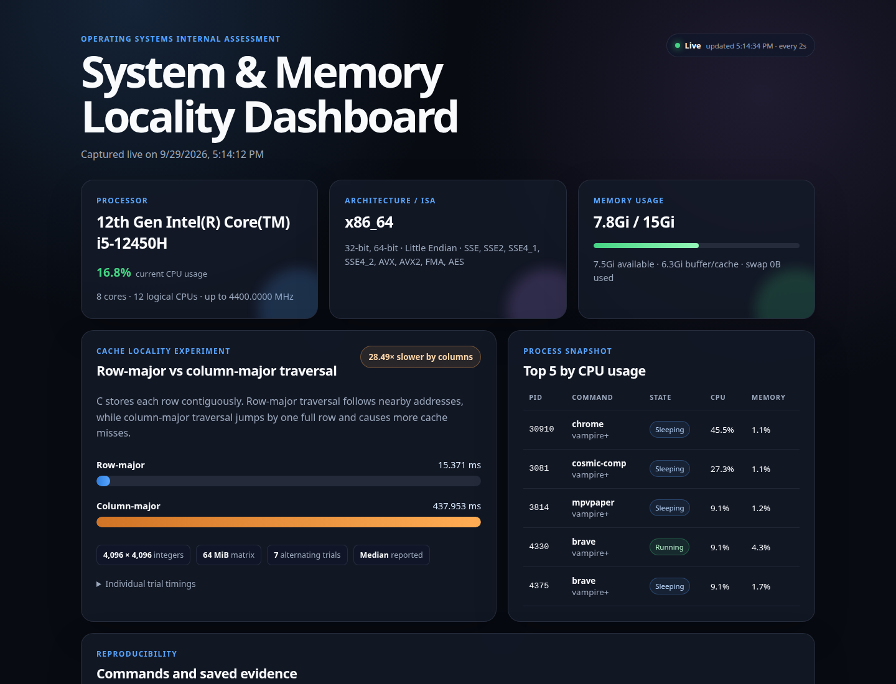

Every number in this report came from one physical laptop running 64-bit Linux: a 12th Gen Intel Core i5-12450H system with 15 GiB of usable memory. The machine has a hybrid processor, so its eight physical cores do not all expose the same number of hardware threads. Four performance cores provide two threads each and four efficiency cores provide one each, giving 12 logical CPUs. All commands are reproducible, and the raw output is saved in data/ rather than copied into the dashboard by hand.
$ lscpu | grep -E 'Architecture|Address sizes|Byte Order|CPU\(s\)|Model name|Thread|Core|L1d|L2|L3' Architecture: x86_64 Address sizes: 39 bits physical, 48 bits virtual Byte Order: Little Endian CPU(s): 12 Model name: 12th Gen Intel(R) Core(TM) i5-12450H Thread(s) per core: 2 Core(s) per socket: 8 L1d cache: 320 KiB (8 instances) L2 cache: 7 MiB (5 instances) L3 cache: 12 MiB (1 instance)
lscpu fields: x86_64, little-endian byte order, eight cores and twelve logical CPUs.The ISA is x86_64: a 64-bit, little-endian, CISC instruction set with variable-length instructions. Little-endian means the least significant byte of a multi-byte value is stored at the lowest address, so integer 1 appears as 01 00 00 00 in memory. The address-size line reports 39 physical and 48 virtual bits. The virtual address space visible to a process is therefore much larger than the installed RAM; paging and virtual memory create that abstraction.
The flags include SSE, SSE2, SSE4.1, SSE4.2, AVX, AVX2, FMA and AES. AVX2 can operate on 256 bits at once, but vectorisation is most effective when data is contiguous. That connects the ISA directly to the locality experiment: row-major traversal presents adjacent integers to the core, while column-major traversal presents a 16 KiB stride. The 64 MiB matrix is far larger than the 12 MiB L3 cache, which prevents the full working set from remaining cached.
$ free -h
total used free shared buff/cache available
Mem: 15Gi 7.5Gi 4.0Gi 914Mi 6.0Gi 7.8Gi
Swap: 15Gi 0B 15Gi
The important distinction is between free and available. Free counts currently unused pages. Available also includes cache pages that the kernel expects it can reclaim without swapping. Here only 4.0 GiB was completely free, but 7.8 GiB was available to new programs. The full 6.0 GiB buff/cache value cannot simply be added to free because some cached and kernel memory is not immediately reclaimable. Unlike the sample machine, this laptop has 15 GiB of swap configured, although none was in use during capture.
ps -eLf prints one row per thread instead of one row per process. In the capture, PID 30407 appeared repeatedly with different lightweight-process IDs and an NLWP value of 64 in the excerpt below. The PID remains the same because the threads belong to one process; LWP changes because each thread is an independently schedulable execution context. They share the process address space and open files, making communication cheaper than between separate processes but requiring synchronisation around shared data.
UID PID PPID LWP C NLWP STIME TTY TIME CMD vampire+ 30407 30396 30407 34 64 17:11 pts/0 00:01:23 copilot vampire+ 30407 30396 30408 0 64 17:11 pts/0 00:00:00 copilot vampire+ 30407 30396 30409 7 64 17:11 pts/0 00:00:17 copilot vampire+ 30407 30396 30410 7 64 17:11 pts/0 00:00:17 copilot vampire+ 30407 30396 30411 7 64 17:11 pts/0 00:00:17 copilot vampire+ 30407 30396 30412 7 64 17:11 pts/0 00:00:17 copilot
The primary state letter R means running or runnable, S means interruptible sleep while waiting for an event, I identifies an idle kernel thread, and D is uninterruptible sleep, usually while the kernel waits for I/O. Most processes in a lightly loaded desktop are in S because they spend more time waiting than executing. A separate ps -eo pid,stat,comm view supplies these state codes; the -eLf view in Figure 3 is specifically for exposing threads.
% time seconds usecs/call calls errors syscall 51.97 0.000593 593 1 execve 23.75 0.000271 15 17 mmap 5.78 0.000066 13 5 mprotect 4.29 0.000049 8 6 openat 3.59 0.000041 41 1 munmap 2.10 0.000024 3 8 close 2.10 0.000024 3 7 fstat 1.93 0.000022 4 5 read 0.88 0.000010 5 2 2 access 0.00 0.000000 0 1 1 ioctl 0.00 0.000000 0 2 2 statfs 0.00 0.000000 0 2 getdents64 ------ ----------- ----------- ------ ------ -------- 100.00 0.001141 16 70 5 total
strace -c summary: 70 system calls and five expected probe errors.strace -c makes the user/kernel boundary measurable. Even listing one directory required 70 system calls. The 17 mmap calls are largely the dynamic loader mapping libraries before the program does its useful work, while getdents64 reads directory entries. The five errors do not mean ls failed: access, terminal and filesystem probes commonly try an operation, inspect the error code, and choose another path. Every listed call crosses from user mode into privileged kernel code.
The C benchmark allocates a 4096 × 4096 matrix of 32-bit unsigned integers: 16,777,216 elements or exactly 64 MiB. Both loops add every element and produce the same checksum. Row-major order follows C's contiguous layout. Column-major order jumps one complete row per access, a stride of 4096 × 4 = 16,384 bytes. The program touches a separate 64 MiB buffer between measurements to disturb the caches, alternates which traversal runs first, executes seven trials and reports the median to reduce sensitivity to interruptions.
| Trial | Row-major (ms) | Column-major (ms) | Ratio |
|---|---|---|---|
| 1 | 13.503 | 399.175 | 29.56× |
| 2 | 15.371 | 439.497 | 28.59× |
| 3 | 16.342 | 438.782 | 26.85× |
| 4 | 21.263 | 442.635 | 20.82× |
| 5 | 15.142 | 428.977 | 28.33× |
| 6 | 17.825 | 437.953 | 24.57× |
| 7 | 14.421 | 425.847 | 29.53× |
| Median | 15.371 | 437.953 | 28.49× |
The arithmetic is identical, but the access order changes how much useful work is obtained from each cache line. A typical 64-byte line holds sixteen 4-byte integers. Row-major order consumes all sixteen before moving on and is easy to prefetch and vectorise. Column-major order uses one integer and then jumps 16 KiB, so most of the fetched line is not reused until much later. The stride also touches a new page every few accesses, increasing translation-lookaside-buffer pressure. Because the 64 MiB matrix exceeds the 12 MiB L3 cache, lines are evicted before the traversal returns to nearby elements.
The measured 28.49× gap is larger than the simple “sixteen integers per cache line” estimate. That estimate describes spatial utilisation only; it does not include TLB misses, reduced hardware prefetch effectiveness, memory-level dependency effects, or the compiler's greater opportunity to vectorise the contiguous loop. This is why the benchmark is necessary: theory predicts the direction, but the machine determines the magnitude.
The dashboard is served by server.py using Python's standard library. Static identity and locality values come from the reproducible capture in data/results.json. The browser then polls /api/live every two seconds, so CPU usage, memory use and the top five processes change without reloading. The page does not invent missing measurements: an unavailable endpoint is shown as offline, while the captured experiment remains visible.

No numeric result in this report was chosen by hand. run.sh timestamps the capture, saves command output, compiles the C benchmark with warnings enabled, records all seven trials and regenerates the JSON used by the page. Memory and process figures will naturally differ on another run because they describe a moment. The locality ratio should keep the same direction but will vary with CPU load, cache hierarchy, compiler, power state and thermal conditions.
Saved evidence: lscpu.txt, free-h.txt, top.txt, ps-eLf.txt, strace-c.txt, locality.json and results.json. The exact commands are stored in data/commands.txt.